O alerta chega antes da água.
CitizenTech que transforma sensores de nível de córrego e de chuva em alertas por bairro, orientando moradores de áreas de risco até o abrigo com vaga mais próximo.
| Nome | RM |
|---|---|
| Lucas Ludovico | RM554589 |
| Yuri Lopes | RM555522 |
| Thiago Oliveira | RM555485 |
Vídeo pitch: {{VIDEO}}
.zip, com instruções no README.md:
database/ (script Oracle), api/ (Java 17 + Spring Boot),
web/ (React), iot/ (simulador) e docs/ (este PDF e o OpenAPI).
Moradores de bairros às margens de córregos sujeitos a alagamento, em geral nas periferias, onde o aviso costuma chegar quando a água já está dentro de casa. Inclui idosos e famílias sem carro, que precisam de mais tempo para sair.
Falta de aviso antecipado e localizado sobre enchentes e de informação sobre para onde ir. O morador não sabe se o córrego está subindo nem qual abrigo ainda tem vaga.
Sensores medem o nível do córrego e a chuva e enviam leituras para a API. Ao passar de um limite, a API cria um alerta de ATENÇÃO ou CRÍTICO para o bairro. O app mostra a situação com cores, lista os abrigos com vaga e permite que o morador envie relatos.
Oracle (banco relacional), Java 17 + Spring Boot (API REST, JPA, Spring Security, JWT, BCrypt, Swagger), React (web mobile-first), Python (simulação de sensores) e JUnit + MockMvc (testes).
Moradores, que recebem alertas e enviam relatos. Defesa Civil (perfil ADMIN), que cadastra sensores e abrigos, encerra alertas e valida relatos. Escolas, CEUs e igrejas, que servem de abrigo. Prefeitura e subprefeituras, que instalam os sensores.
Métricas: antecedência média entre o alerta e o pico do córrego, moradores cadastrados por bairro de risco, % de alertas confirmados por relatos e ocupação dos abrigos em cada evento. Para ampliar, basta cadastrar novos bairros e sensores, sem mudar o código.
| ODS | Como o Alerta Cheia contribui |
|---|---|
| 11 · Cidades e comunidades sustentáveis | Reduz o número de pessoas afetadas por desastres ligados à água (meta 11.5) com alerta antecipado e rota até o abrigo. |
| 13 · Ação contra a mudança do clima | Aumenta a resiliência e a capacidade de adaptação a eventos climáticos extremos (meta 13.1), como chuvas intensas. |
| 10 · Redução das desigualdades | Prioriza bairros periféricos de alto risco e funciona em celulares simples. Sem conexão, o app continua mostrando os últimos dados. |
São 7 entidades, normalizadas até a 3FN: cada tabela guarda um único assunto e não há atributos derivados nem repetidos.
erDiagram
TB_BAIRRO ||--o{ TB_USUARIO : "tem moradores"
TB_BAIRRO ||--o{ TB_SENSOR : "monitorado por"
TB_BAIRRO ||--o{ TB_ABRIGO : "possui"
TB_BAIRRO ||--o{ TB_ALERTA : "recebe"
TB_BAIRRO ||--o{ TB_RELATO : "e citado em"
TB_SENSOR ||--o{ TB_LEITURA : "registra"
TB_LEITURA ||--o| TB_ALERTA : "gera (0 ou 1)"
TB_USUARIO ||--o{ TB_RELATO : "envia"
TB_BAIRRO {
NUMBER id PK
VARCHAR2 nome UK
VARCHAR2 cidade UK
VARCHAR2 nivel_risco "BAIXO|MEDIO|ALTO"
}
TB_USUARIO {
NUMBER id PK
VARCHAR2 nome
VARCHAR2 email UK
VARCHAR2 senha_hash "BCrypt"
VARCHAR2 perfil "ADMIN|CIDADAO"
VARCHAR2 telefone
NUMBER id_bairro FK
TIMESTAMP criado_em
}
TB_SENSOR {
NUMBER id PK
VARCHAR2 codigo UK
VARCHAR2 tipo "NIVEL_RIO|PLUVIOMETRO"
NUMBER id_bairro FK
NUMBER limite_alerta
NUMBER limite_critico
NUMBER ativo "0|1"
}
TB_LEITURA {
NUMBER id PK
NUMBER id_sensor FK
NUMBER valor
TIMESTAMP data_hora
}
TB_ALERTA {
NUMBER id PK
NUMBER id_bairro FK
NUMBER id_leitura FK,UK
VARCHAR2 severidade "ATENCAO|CRITICO"
VARCHAR2 mensagem
VARCHAR2 status "ATIVO|ENCERRADO"
TIMESTAMP criado_em
}
TB_ABRIGO {
NUMBER id PK
VARCHAR2 nome
VARCHAR2 endereco
NUMBER capacidade
NUMBER vagas_ocupadas
NUMBER id_bairro FK
}
TB_RELATO {
NUMBER id PK
NUMBER id_usuario FK
NUMBER id_bairro FK
VARCHAR2 descricao
VARCHAR2 status "ABERTO|VERIFICADO|DESCARTADO"
TIMESTAMP criado_em
}
| Relacionamento | Cardinalidade e regra |
|---|---|
| BAIRRO → USUARIO, SENSOR, ABRIGO, ALERTA, RELATO | 1:N. Todo registro pertence a exatamente um bairro (FK NOT NULL). |
| SENSOR → LEITURA | 1:N. Cada sensor registra muitas leituras ao longo do tempo. |
| LEITURA → ALERTA | 1:0..1. Uma leitura gera no máximo um alerta (UNIQUE(id_leitura)). |
| USUARIO → RELATO | 1:N. Um morador pode enviar vários relatos. |
| Constraint | Garante |
|---|---|
ck_sensor_limites | limite_critico > limite_alerta |
ck_abrigo_vagas | 0 ≤ vagas_ocupadas ≤ capacidade |
ck_leitura_valor | Leituras não negativas |
uk_usuario_email, uk_sensor_codigo, uk_bairro_nome_cidade | Ausência de duplicidade |
CHECK ... IN (...) | Domínio dos campos de status, perfil, tipo, severidade e risco |
database/alerta_cheia.sqlO script está organizado em quatro etapas e roda do início ao fim no SQL Developer (F5). Ele pode ser executado de novo sem erro.
| # | Uso real | Recursos SQL |
|---|---|---|
| Q1 | Tela "Meu bairro": alertas ativos, mais graves primeiro | JOIN, CASE no ORDER BY |
| Q2 | Painel da Defesa Civil: média e máxima de chuva em 24 h por bairro | 2 JOINs, AVG, MAX, COUNT, GROUP BY, INTERVAL |
| Q3 | Ranking de bairros com mais alertas em 30 dias | LEFT JOIN, COUNT, SUM(CASE) |
| Q4 | Ocupação dos abrigos por bairro (%) | JOIN, SUM, ROUND, GROUP BY |
| Q5 | Última leitura de cada sensor com situação calculada | 2 JOINs, subconsulta correlacionada com MAX, CASE |
| Q6 | Relatos por bairro e status | JOIN, COUNT, GROUP BY de 2 colunas |
| Q7 | Abrigos com vaga em bairros com alerta CRÍTICO ativo | JOIN, EXISTS |
-- Q2. Media e maxima de chuva nas ultimas 24h por bairro
SELECT b.nome AS bairro, ROUND(AVG(l.valor), 2) AS media_mm_h, MAX(l.valor) AS maxima_mm_h, COUNT(*) AS qtd_leituras
FROM TB_LEITURA l
JOIN TB_SENSOR s ON s.id = l.id_sensor
JOIN TB_BAIRRO b ON b.id = s.id_bairro
WHERE s.tipo = 'PLUVIOMETRO' AND l.data_hora >= SYSTIMESTAMP - INTERVAL '24' HOUR
GROUP BY b.nome
ORDER BY maxima_mm_h DESC;
-- Q5. Ultima leitura de cada sensor, com situacao calculada
SELECT s.codigo, s.tipo, b.nome AS bairro, l.valor, l.data_hora,
CASE WHEN l.valor >= s.limite_critico THEN 'CRITICO'
WHEN l.valor >= s.limite_alerta THEN 'ATENCAO' ELSE 'NORMAL' END AS situacao
FROM TB_SENSOR s
JOIN TB_BAIRRO b ON b.id = s.id_bairro
JOIN TB_LEITURA l ON l.id_sensor = s.id
WHERE l.data_hora = (SELECT MAX(l2.data_hora) FROM TB_LEITURA l2 WHERE l2.id_sensor = s.id);
As outras 5 consultas estão comentadas no final do script.
A API foi feita em Java 17 com Spring Boot 3.5 (Web, Data JPA, Validation e Security). Cada entidade do banco é um recurso da API, e o app web consome essa mesma API.
@Valid, aplica o perfil com @PreAuthorize e devolve o status.TB_*.Pacotes de apoio:
dto: records de entrada e saída. A entidade nunca é exposta diretamente.exception: GlobalExceptionHandler, que padroniza as respostas de erro.security: filtro JWT e configuração do Spring Security.config: Swagger e carga de dados do perfil dev.| Método | Rota | Acesso | Descrição |
|---|---|---|---|
| POST | /auth/register | público | Cadastra um cidadão (201, 400, 409) |
| POST | /auth/login | público | Devolve o token JWT (200, 401) |
| GET | /usuarios/me | logado | Dados do usuário logado |
| GET | /bairros, /bairros/{id} | público / logado | Lista e detalha bairros |
| GET | /bairros/{id}/situacao | logado | NORMAL, ATENÇÃO ou CRÍTICO, com os alertas ativos |
| POST PUT DELETE | /bairros[/{id}] | ADMIN | CRUD de bairros (409 se houver vínculos) |
| GET POST PUT DELETE | /sensores[/{id}] | ADMIN | CRUD de sensores com validação dos limites |
| POST | /leituras | sensor | Recebe a leitura (header X-Sensor-Key) e gera alerta |
| GET | /leituras?sensorId= | logado | Últimas 50 leituras do sensor |
| GET | /alertas?bairroId=&status=, /alertas/{id} | logado | Lista com filtros opcionais e detalhe |
| PUT | /alertas/{id}/encerrar | ADMIN | Encerra um alerta (409 se já estiver encerrado) |
| GET | /abrigos?bairroId=&somenteComVaga=, /abrigos/{id} | logado | Lista e detalha abrigos |
| POST PUT DELETE | /abrigos[/{id}] | ADMIN | CRUD de abrigos (400 se ocupadas > capacidade) |
| PATCH | /abrigos/{id}/ocupacao | ADMIN | Ajuste atômico de ocupação. Body: {"delta": int} (−50 a 50). 409 se fora dos limites, 404 se não existe. |
| POST GET | /relatos | logado | Envia relato. ADMIN vê todos e o cidadão vê os próprios |
| PUT | /relatos/{id}/status | ADMIN | Marca como VERIFICADO ou DESCARTADO |
| DELETE | /relatos/{id} | dono / ADMIN | Exclui o relato (403 se for de outra pessoa) |
| Status | Quando |
|---|---|
| 200 / 201 / 204 | Sucesso em leitura, criação ou exclusão |
| 400 | Bean Validation falhou (o JSON traz o campo campos com o erro de cada campo), JSON mal formado ou regra de negócio violada |
| 401 | Sem token, token inválido ou expirado, login inválido ou chave do sensor ausente |
| 403 | Usuário autenticado sem o perfil necessário |
| 404 / 409 | Recurso inexistente / conflito (email ou código duplicado, registro com vínculos) |
A interface fica em http://localhost:8080/swagger-ui.html, com o botão Authorize para colar o token JWT. A especificação exportada está em docs/openapi.json e pode ser importada no Postman em Import → OpenAPI.
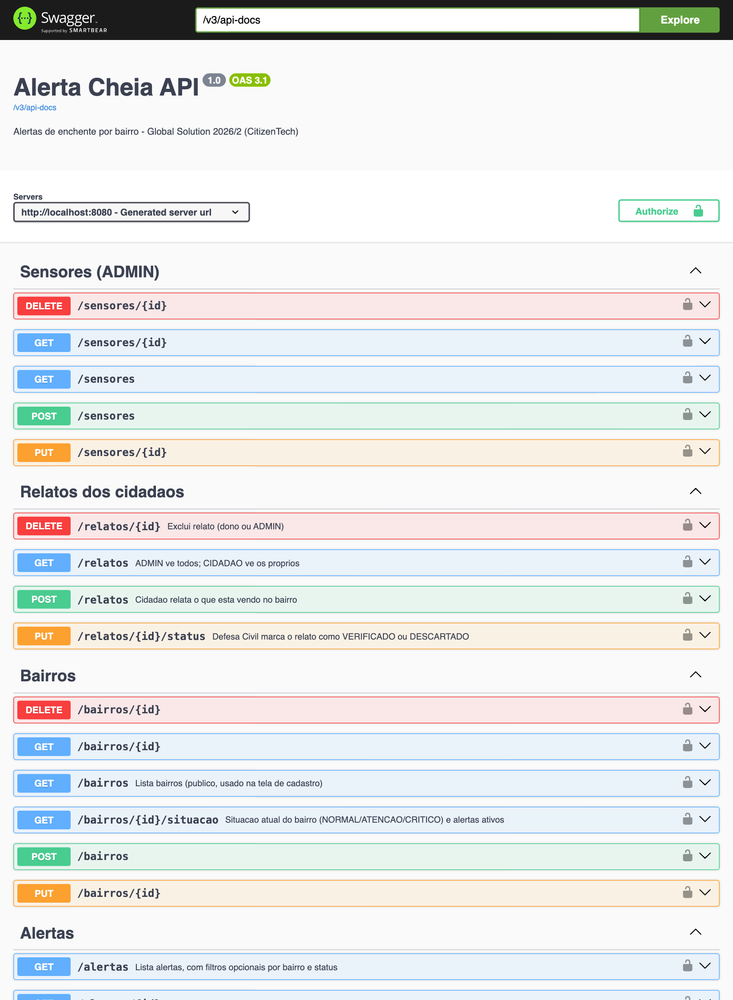
Os testes são automatizados com JUnit 5 + MockMvc, cobrindo a API inteira (controller → service → repository → banco H2) e a regra de classificação. Para rodar: cd api && mvn test. O relatório é gerado em api/target/surefire-reports/.
| ID | Cenário | Entrada | Saída esperada | Tipo | Status |
|---|---|---|---|---|---|
| CT01 | Cadastro de cidadão válido | POST /auth/register com dados válidos | 201, perfil CIDADAO e sem senha nem hash na resposta | Auto | Passou |
| CT02 | Email já cadastrado | POST /auth/register com maria@email.com | 409 Conflict | Auto | Passou |
| CT03 | Dados inválidos no cadastro | email "nao-e-email", senha "123" | 400 com campos.email e campos.senha | Auto | Passou |
| CT04 | Login com senha errada | POST /auth/login com senha incorreta | 401 "Email ou senha invalidos" | Auto | Passou |
| CT05 | Rota protegida sem token | GET /alertas sem Authorization | 401 | Auto | Passou |
| CT06 | Cidadão tenta excluir sensor | DELETE /sensores/1 com token CIDADAO | 403 Forbidden | Auto | Passou |
| CT07 | Leitura acima do limite crítico | POST /leituras RIO-002 = 3.40 m | 201, situação CRITICO, alerta gerado e bairro 2 com situação CRITICO | Auto | Passou |
| CT08 | Leitura normal | POST /leituras CHUVA-003 = 5.0 | 201, situação NORMAL e alertaGerado = null | Auto | Passou |
| CT09 | Não duplicar alerta | 2 leituras críticas seguidas no mesmo bairro | A segunda não gera alerta | Auto | Passou |
| CT10 | Sensor sem chave | POST /leituras sem X-Sensor-Key | 401 | Auto | Passou |
| CT11 | Abrigo inválido | POST /abrigos com capacidade 10 e ocupadas 20 | 400 | Auto | Passou |
| CT12 | Tentativa de XSS no relato | descrição com <script>alert(1)</script> | 201 com o texto salvo escapado (<script>) | Auto | Passou |
| CT13 | Recurso inexistente | GET /abrigos/9999 | 404 | Auto | Passou |
| CT14 | Classificação: abaixo do limite | rio 1.99 m (limites 2/3) | sem severidade | Unid. | Passou |
| CT15 | Classificação: no limite de alerta | rio 2.00 m | ATENCAO | Unid. | Passou |
| CT16 | Classificação: crítico | rio 3.00 m e 5.50 m | CRITICO | Unid. | Passou |
| CT17 | Fluxo IoT ponta a ponta | simulador --cenario enchente | Alerta ATENÇÃO e depois CRÍTICO, com o app mudando de cor | Manual | Passou |
| CT18 | App sem conexão | Rede derrubada com a tela inicial aberta | Aviso "Sem conexão" mostrando os últimos dados | Manual | Passou |
| CT19 | Encerramento automático: 3 leituras descendo | Crítica + 1,0 / 1,0 / 0,9 no RIO-002 | Situação do bairro volta a NORMAL | Auto | Passou |
| CT20 | Sem encerramento: leituras subindo | Crítica + 1,0 / 1,5 / 1,7 no RIO-002 | Situação continua CRITICO | Auto | Passou |
| CT21 | Sem encerramento: apenas 2 normais | Crítica + 2 leituras de 1,0 m | Top-3 ainda inclui leitura crítica → CRITICO | Auto | Passou |
| CT22 | Concorrência: sem alerta duplicado | 8 threads críticas simultâneas do RIO-001 | 0 exceções, 8 leituras salvas, exatamente 1 alerta CRITICO ATIVO | Auto | Passou |
| CT23 | PATCH ocupação: com vaga | PATCH /abrigos/{id}/ocupacao delta=+1 (abrigo com vaga) | 200 e vagasOcupadas +1 | Auto | Passou |
| CT24 | PATCH ocupação: lotado | PATCH /abrigos/{id}/ocupacao delta=+1 (Igreja Sao Jose 60/60) | 409 "Ocupacao fora dos limites do abrigo" | Auto | Passou |
| CT25 | Relato longo com acentos aceito | ~480 chars com acentos e apóstrofos | 201 (semântica CHAR evita estouro) | Auto | Passou |
| CT26 | 500 apóstrofos estouram após escape | 500 apóstrofos → 2500 chars após escape | 400 Bad Request (não 409) | Auto | Passou |
{{SUREFIRE}}
{{LOG_API}}
As evidências dos testes CT17 e CT18 estão nas Partes 4 e 6 (telas 03, 04 e 08 e o log do simulador).
O app é web mobile-first, feito em React 18 + React Router (Vite), e consome somente a API do grupo. As telas abaixo foram capturadas em 390 × 844 px (tamanho de celular), com o app ligado à API.
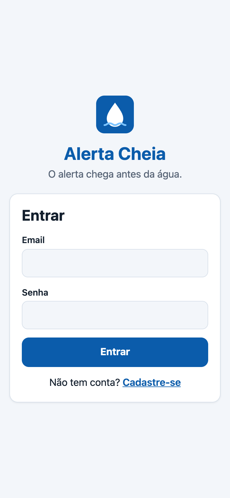
POST /auth/login e guarda o token.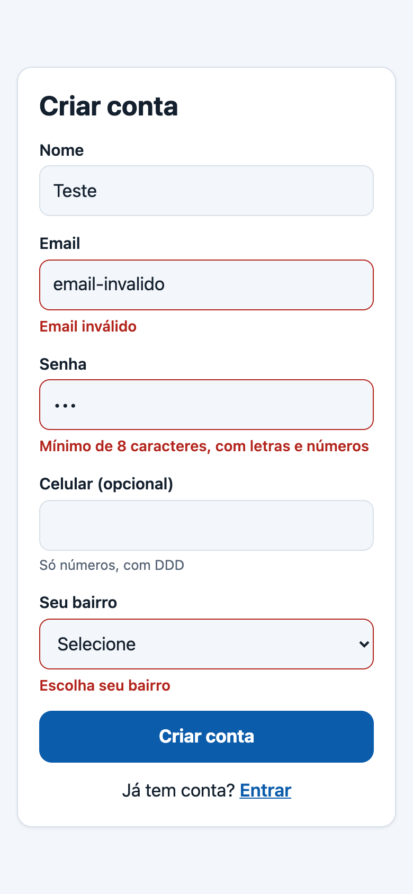
GET /bairros.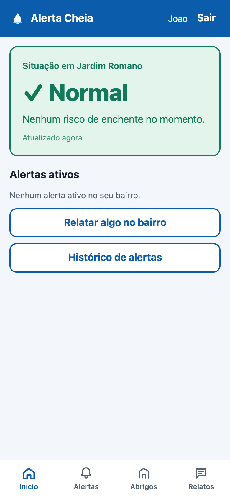
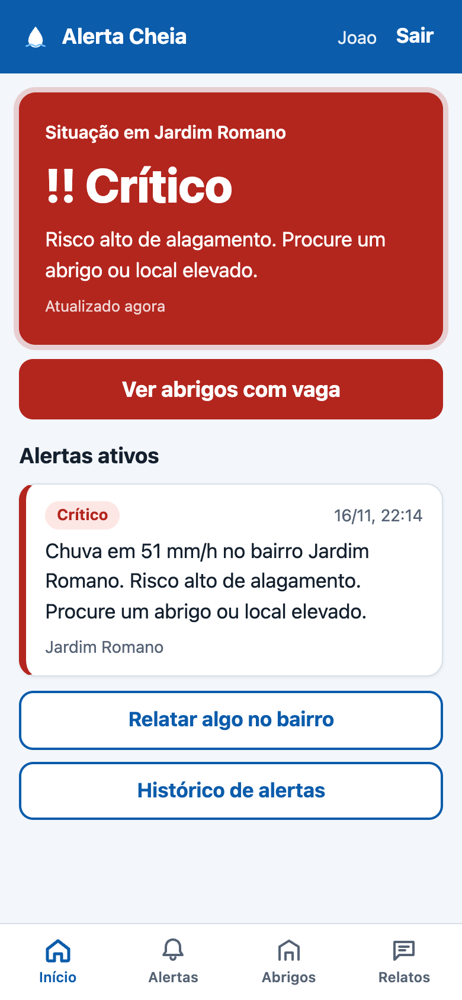
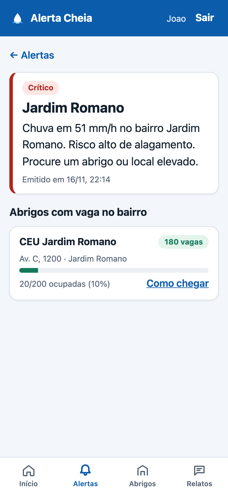
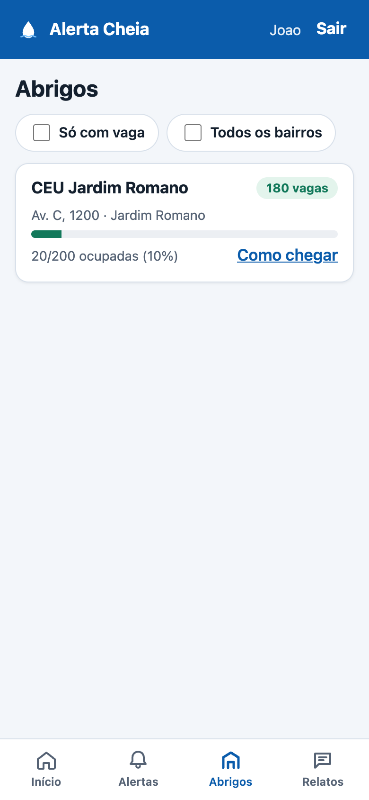
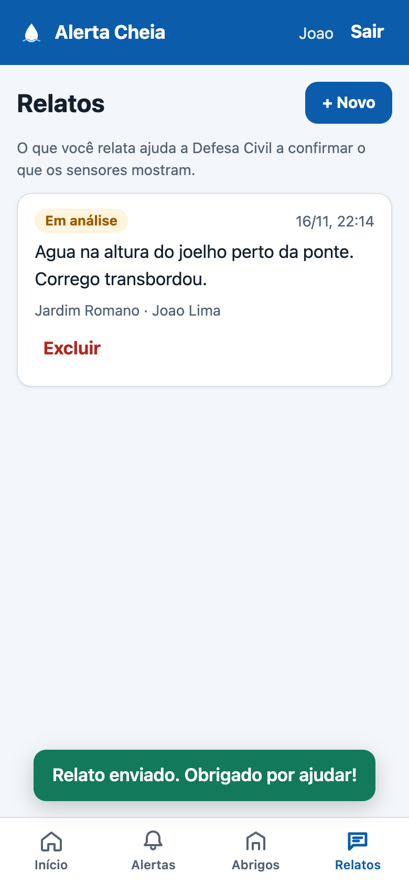
POST /relatos) e mostra o toast de confirmação.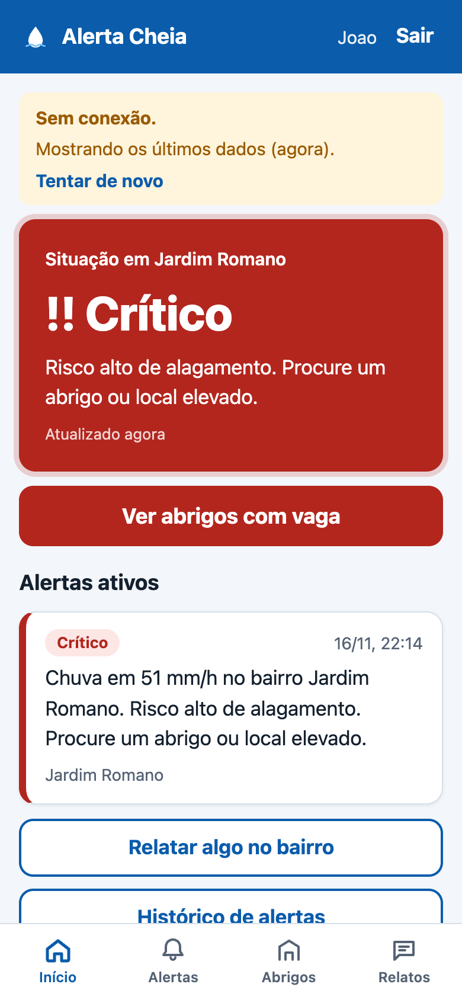
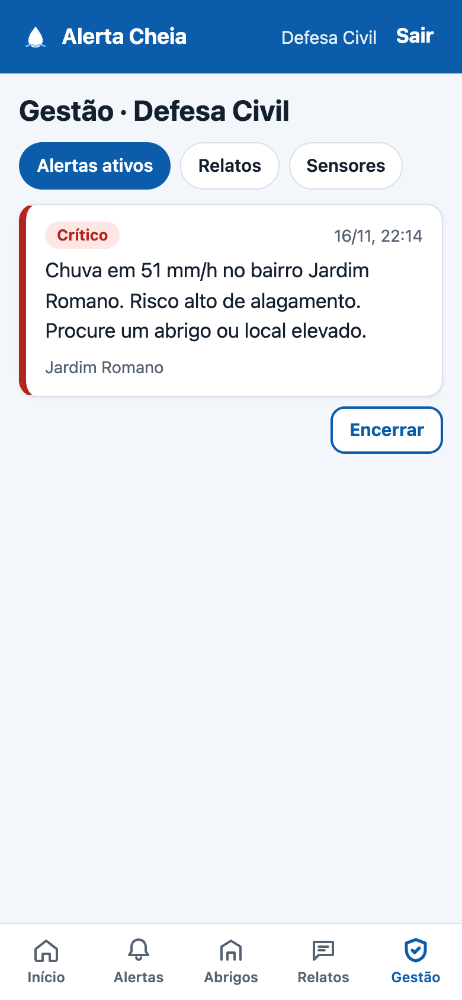
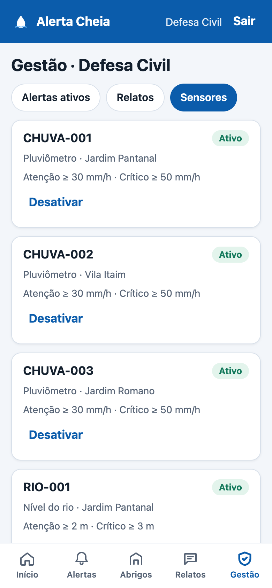
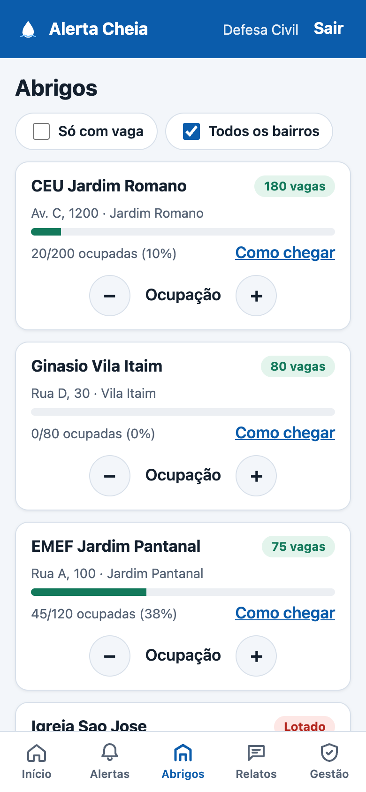
web/src/api.js, que envia o token, aplica timeout de 8 s e converte os erros da API em mensagens legíveis.aria-live, role="alert", aria-invalid, labels em todos os campos e respeito a prefers-reduced-motion.| Requisito | Como foi implementado | Evidência |
|---|---|---|
| Login seguro | Senha guardada com hash BCrypt (BCryptPasswordEncoder), nunca em texto puro. O banco tem apenas senha_hash, e as respostas usam DTOs que não expõem o hash. O login devolve a mesma mensagem para email inexistente e senha errada. | CT01, CT04, script SQL |
| Controle de acesso | Token JWT (HMAC-SHA256, expira em 8 h) com o perfil ADMIN (Defesa Civil) ou CIDADAO. As rotas são protegidas com @PreAuthorize("hasRole('ADMIN')"), e o cidadão só vê e exclui os próprios relatos. No app, a aba Gestão só aparece para ADMIN. | CT05, CT06, log da API |
| Validação de entrada | Bean Validation nos DTOs (@NotBlank, @Email, @Pattern, @Size, @Positive) e regras no service, com resposta 400 detalhando cada campo. | CT03, CT11 |
| Proteção contra SQL injection | Todo acesso passa por Spring Data JPA, com consultas derivadas e JPQL com @Param, sem SQL concatenado. | Repositórios |
| Proteção contra XSS | O texto livre dos relatos é salvo com HTML escapado (HtmlUtils.htmlEscape), e o React renderiza tudo como texto. | CT12, tela 07 |
| Autenticação dos sensores | Header X-Sensor-Key comparado em tempo constante (MessageDigest.isEqual). | CT10 |
| Erros sem vazamento | O GlobalExceptionHandler padroniza os erros e nunca devolve stack trace (server.error.include-stacktrace=never). | Log da API |
| Segredos e CORS | A chave JWT, as credenciais do banco e a chave dos sensores vêm de variáveis de ambiente. O CORS é restrito às origens configuradas (incluindo PATCH), e a API é stateless (sem sessão). | application.properties |
| Prevenção de timing attack no login | Quando o e-mail não existe, um hash fixo gerado na inicialização (passwordEncoder.encode(UUID)) é comparado com BCrypt antes de lançar a exceção, nivelando o tempo de resposta e impedindo enumeração de e-mails por diferença de latência. | CT04 |
| Integridade sob concorrência | Lock pessimista no bairro (PESSIMISTIC_WRITE via travarPorId) impede que threads paralelas criem alertas duplicados. Índice único condicional no Oracle (ux_alerta_ativo) garante a restrição no nível do banco. O PATCH de ocupação usa UPDATE atômico, sem ler e escrever em duas operações separadas. | CT22, CT24 |
O simulador está em iot/simulador.py e usa apenas a biblioteca padrão do Python. Ele simula 2 sensores que enviam JSON por HTTP para a API do grupo (POST /leituras), que é o diferencial "IoT ligado à API".
| Sensor | O que mede | Limites | Como influencia o sistema |
|---|---|---|---|
| RIO-002 NIVEL_RIO | Nível do córrego, em metros (sensor ultrassônico instalado sob a ponte) | Atenção ≥ 2,0 m Crítico ≥ 3,0 m | É o indicador direto de transbordamento: a leitura crítica dispara o alerta CRÍTICO. |
| CHUVA-003 PLUVIOMETRO | Intensidade da chuva, em mm/h (pluviômetro de báscula) | Atenção ≥ 30 mm/h Crítico ≥ 50 mm/h | Antecipa a cheia: chuva forte gera alerta antes de o rio subir, dando tempo ao morador. |
{"codigoSensor": "RIO-002", "valor": 3.1} → POST /leituras (header X-Sensor-Key)
/bairros/{id}/situacao e muda de cor.O simulador tem quatro cenários reproduzíveis:
normal: valores baixos.chuva: chega até ATENÇÃO.enchente: sobe de forma previsível até CRÍTICO.recuo: rio desce de 3,2 m em passos de 0,4 m até 0,9 m (chuva cai de 40 para 5 mm/h). Demonstra o encerramento automático ao vivo.Execução real do cenário enchente seguido de recuo (as telas 03 e 04 da Parte 4 são o antes e o depois deste log):
{{LOG_SIM}}
| Parte | Comando |
|---|---|
| Banco | Executar database/alerta_cheia.sql no SQL Developer (F5) |
| API (Oracle) | Definir DB_URL, DB_USER e DB_PASSWORD e rodar cd api && mvn spring-boot:run |
| API (sem Oracle) | cd api && mvn spring-boot:run -Dspring-boot.run.profiles=dev (H2 em memória com dados de exemplo) |
| Frontend | cd web && npm install && npm run dev e abrir http://localhost:5173 |
| IoT | cd iot && python simulador.py --cenario enchente --intervalo 3 |
| Testes | cd api && mvn test |
| Usuário de teste | Senha | |
|---|---|---|
| ADMIN (Defesa Civil) | admin@alertacheia.com | Admin@123 |
| CIDADAO (Jardim Romano) | joao@email.com | Cidadao@123 |
| CIDADAO (Jardim Pantanal) | maria@email.com | Cidadao@123 |